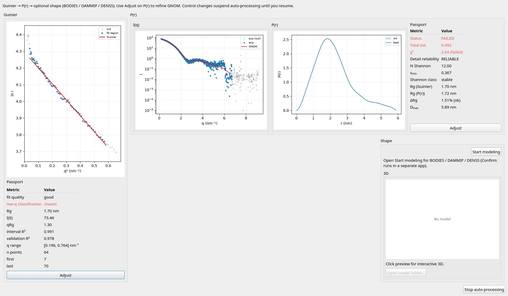
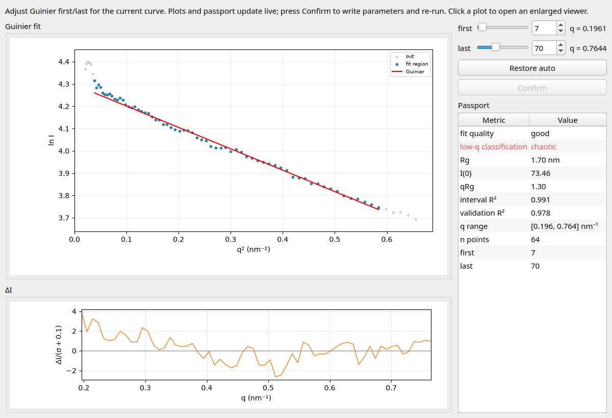
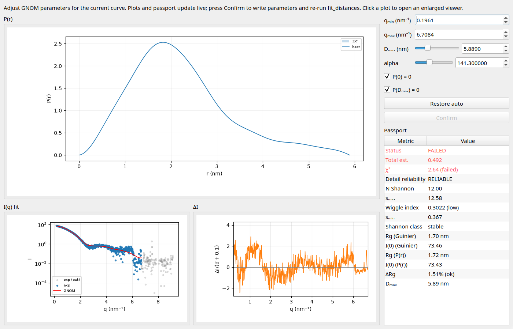

To arm monodisperse analysis
Main window right → monodisperse icon → window opens (armed while open).

Open this window from the right-column monodisperse icon. While it stays open, new samples that reach a calibrated (and optionally subtracted) 1D profile run Guinier → P(r) / GNOM automatically. Closing the window disarms that chain.
Each pane shows a plot (or plots), a Passport table of quality metrics, and an Adjust button. Parameter controls live in dedicated adjust wizards — not on the main pane. Optional shape modeling (BODIES / DAMMIF / DENSS) is launched with Start modeling into a separate Shape Modeling app — press Confirm there to run.
Opening an Adjust wizard and changing controls (or confirming) pauses auto-processing until you
Resume auto-processing (Ctrl+P; Ctrl+X stops auto).
Guinier artifacts for this window live under guinier_mono/ (separate from polydisperse).

n_runs, DENSS protocol) apply on the next modeling run.Main window right → monodisperse icon → window opens (armed while open).

Click Adjust under the Guinier passport (or the Guinier plot) → edit first / last in the wizard → plots and passport update live → Confirm to write parameters and re-run Guinier (then GNOM for the current profile). Restore auto returns to the auto-chosen interval. Click a wizard plot to open an enlarged viewer (matplotlib toolbar + title-bar maximize).

Click Adjust under the P(r) passport (or either embedded P(r) / I(q) plot) → dedicated wizard
with P(r), I(q) fit, residuals, qmin/qmax, Dmax, alpha, boundary
checkboxes, and passport. Plots and passport update live as you edit; press Confirm to write
parameters and re-run fit_distances. Use Restore auto for the auto-fit Dmax/alpha
snapshot. Click a wizard plot for an enlarged viewer (title-bar maximize). Resume auto-processing when
ready; re-run shape modeling if needed.

Under Shape, choose BODIES, DAMMIF, or DENSS (and options as needed) → Start modeling → Shape Modeling app opens → set run knobs → Confirm there. When the Shape Modeling app is open and auto is on, new profiles that finish GNOM can prompt Confirm on that app. Use Open model folder… for on-disk 3D outputs. Click the 3D preview for an interactive viewer when a model exists.
Stop auto-processing (Ctrl+X) → new files skip analysis until Resume auto-processing (Ctrl+P). Editing/confirming an Adjust wizard also moves you into Manual until you resume.
guinier_mono/<stem>/ — Guinier region / qualityfit_distances/<stem>/ — GNOM .out, p(r) / fit plots, quality YAMLmodel_bodies/, dammif/, or denss/ under the stem when shape modeling has run